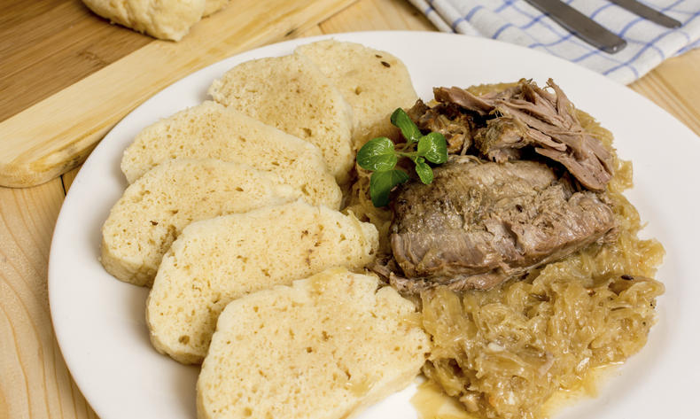

Klasika české kuchyně – pečená vepřová krkovice, dušené kysané zelí a houskový knedlík.
Předehřejeme troubu na 170 °C. Cibuli nakrájíme na kostičky, česnek utřeme, slaninu nakrájíme na špalíčky.
Krkovici osolíme, opepříme, posypeme kmínem a potřeme česnekem. Vložíme do pekáče na cibuli, přidáme sádlo a podlijeme hrnkem horké vody. Pečeme asi 1,5 hodiny.
Zelí slijeme, lák uchováme. Zelí pokrájíme. Na sádle osmahneme slaninu, cibuli a kmín. Přidáme zelí, lák, osolíme, přidáme cukr a ocet, vaříme 15 minut.
Zaprášíme moukou a za stálého míchání dusíme dalších 15 minut nebo zahustíme záklechtkou.
Maso vyjmeme z pekáče a necháme 15–20 minut odpočinout. Pekáč dáme na sporák, výpek odpaříme, přidáme mouku a osmahneme. Zalijeme vodou a vaříme asi 15 minut.
Podáváme s houskovým knedlíkem, zelím a šťávou z masa.